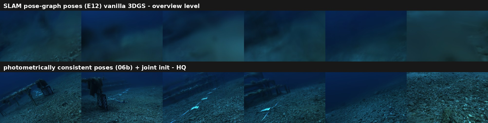
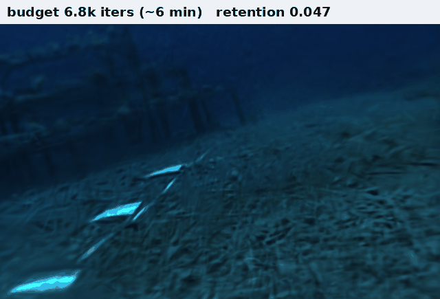
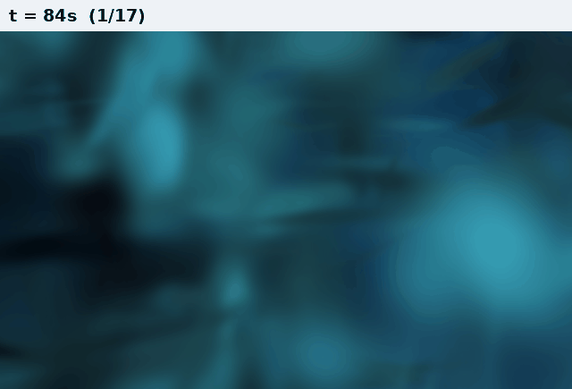
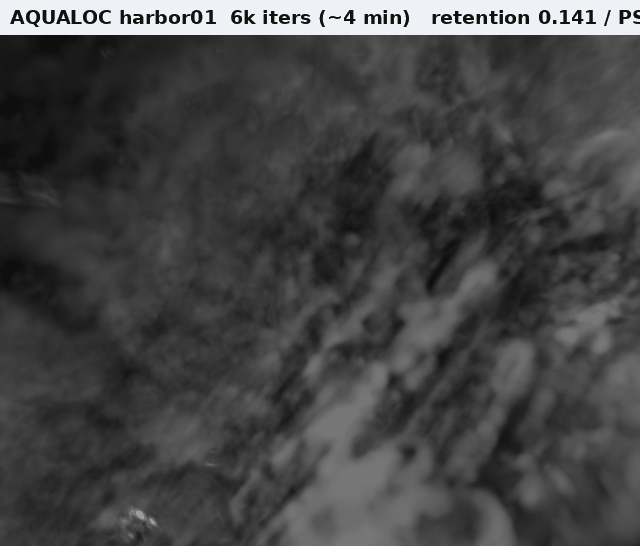
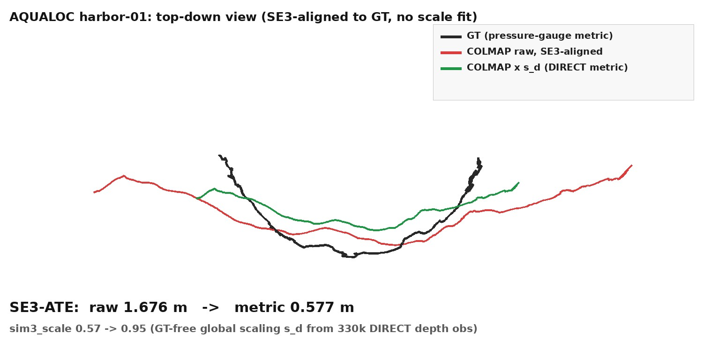
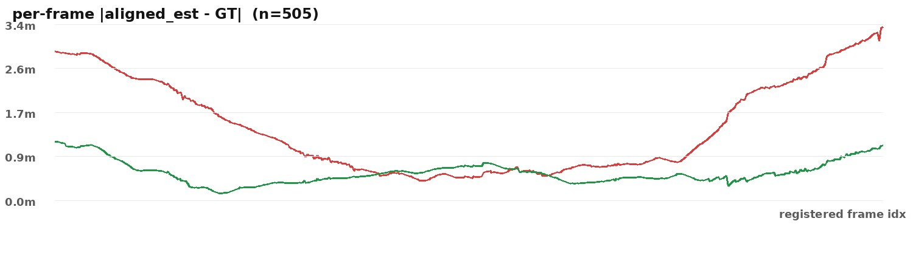
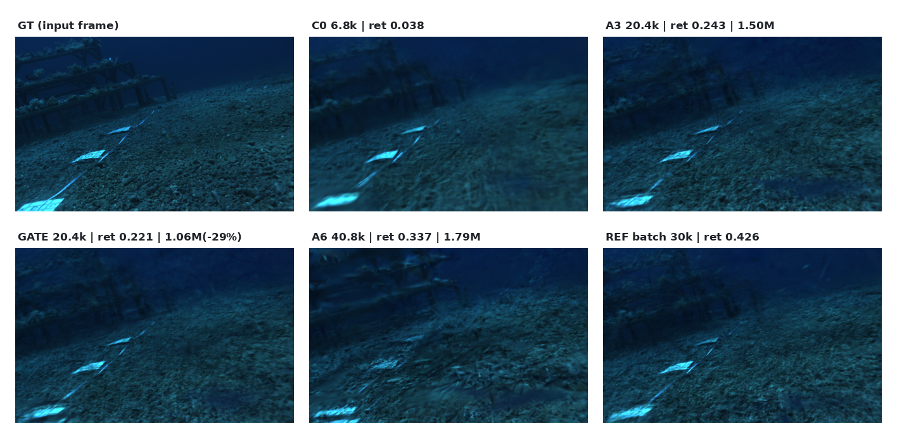
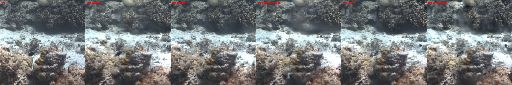
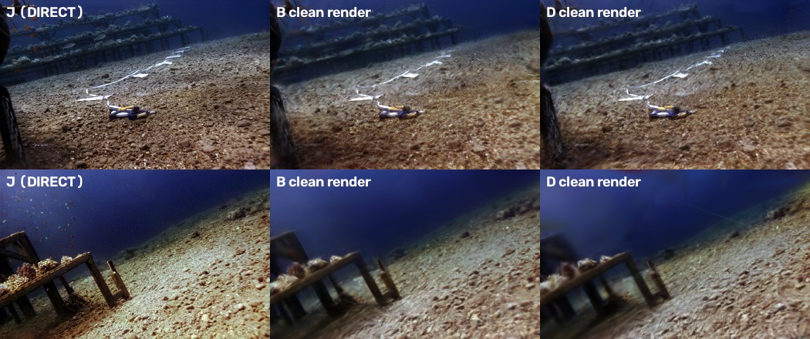

〇研究目标
水下视频不依赖离线 COLMAP，能否在可接受时间内建成质量达标的 3DGS 地图？瓶颈到底在哪？
把它定义成可优化的指标 Time-to-Map：T_map@Q = 在质量门控 （PSNR_u8 ≥ 24 且 锐度保持 retention ≥ 0.15）下，从水下视频到可用地图的最短时间。 锐度 retention = 渲染图与真值图的 Laplacian 方差中位比（衡量高频几何细节存留）。
一系统：免 COLMAP 的增量 3DGS 建图
DIRECT 双输出的实测角色分工：D = 几何初始化桥（承重——免 COLMAP 管线与 0.426 锐度天花板均由 D-init 达成）+ 表示压缩调度器（第五节）； J = 外观紧凑化（同 PSNR 高斯 −37%）；J 做几何监督无效（E2026-0923-02 双 seed 判决）。
二质量差距从哪来：因果排除链

水下 3DGS 地图糊，直觉候选是深度模型/时序一致性/位姿/水质。逐个用受控实验判决：
| 候选因素 | 判别实验 | 判决 |
|---|---|---|
| 深度模型精度 | oracle 对照：喂离线模型渲出的真值级深度（E2026-0923-05 C1） | 排除——真值深度也不救锐度 |
| 深度时序一致性 | 同上（oracle = 完美时序一致） | 排除（二阶） |
| 点云写入策略 | 体素融合 vs 直接追加，双 seed（E2026-0923-05 B×3） | 排除——差值在 seed 噪声内 |
| J 去浊图像监督 | 2×2 + 路由臂，双 seed（E2026-0923-02） | 中性 |
| 位姿质量 | SfM/在线 prior-BA/位姿图 × 三档预算（E2026-0924-06/07） | 二阶——预算解锁后才显形（0.24 vs 0.10） |
| 优化预算 | 预算阶梯 + batch 上限定锚（E2026-0923-05/0924-07） | 一阶主因 ✓ |
| 预算分配策略 | 窗口时序 / 置信度门控正反双向（E2026-0924-08） | 与锐度正交——分配自由度不解决锐度 |
三主结果 ①：优化预算阶梯（canonical 八臂，coral）
| 臂 | iters | 锐度 retention | PSNR_u8 | 墙钟（独占） |
|---|---|---|---|---|
| C0（最小预算） | 6.8k | 0.038 | 26.03 | 370 s |
| A3（在线增量）← T@0.15 基准 | 20.4k | 0.243 ±0.006 | 26.16 | ~890 s |
| A6（在线增量） | 40.8k | 0.337 | 25.26 | 1530 s |
| REF（batch 同 init） | 30k | 0.426（上限） | 26.46 | 1186 s |
| P2 / P3（在线位姿 @20.4k） | 20.4k | 0.104 / 0.092 | 23.0 / 22.6 | ~855 s |
| QG（loss 自适应停） | 8.4k 即停 | 0.045 | 26.03 | 442 s |
预算阶梯与位姿×预算交互；QG 负结果：光度 loss 平台 ≠ 锐度平台。



四主结果 ②：免 GT 米制化（AQUALOC）
离线 COLMAP 只给任意尺度的轨迹（SE3-ATE 1.676 m，尺度差 43%）。本项目用 DIRECT 深度做全局单参数定标 s_d = median(z/z_direct)（33 万深度观测，全程无真值参与）， 一步把轨迹拉回米制：
SE3-ATE：1.676 m → 0.578 m（−65.5%）， sim3_scale 0.57 → 0.95 ≈ 1（与压力计独立米制源交叉验证）。
SE3 ≈ Sim3（0.578 ≈ 0.568）意味着米制版免费达到了免尺度版的形状质量—— 机制是 1 参数定标即达标（联合 BA 在定标初值上零移动）。 边界：505/1529 帧注册覆盖、离线、单序列（E2026-0921-18）。


五主结果 ③：双输出导引有限计算（E2026-0924-08）
用 DIRECT 深度的多视角一致性作为逐高斯置信度（conf），门控 densify—— "把有限计算导向几何上可信的区域"。固定 20.4k 预算三臂对照：
| 臂 @20.4k | retention | PSNR_u8 | 高斯数 | 墙钟 |
|---|---|---|---|---|
| A3 基准（增量，官方窗） | 0.243 | 26.16 | 1.50M | ~890 s |
| REF20（batch 锚） | 0.302 | 26.53 | 1.55M | 864 s |
| OPEN（增量，全窗） | 0.231 | 26.31 | 1.29M | 901 s |
| GATE（conf≥p50 门控） | 0.221 | 26.41 | 1.06M（−29%） | 878 s |
| GATE_INV（反向门控） | 0.222 | 26.26 | 1.22M | 877 s |
判读：画质轴证伪——正反门控同结果（conf 与锐度正交），所有在线分配变体 均低于 batch 等预算锚；压缩轴成立——GATE 以 −29% 高斯换 +0.25dB PSNR （渲染加速/表示压缩，与 J-init 的 −37% 方向可叠加）。

工程压缩阶梯（E2026-0924-09，全部实测渲染基准）
| 配置 @20.4k | retention | PSNR_u8 | 高斯数 | 可见高斯 | 渲染 FPS | VRAM |
|---|---|---|---|---|---|---|
| L0 基线（e28 复刻 A3 ✓） | 0.232 | 26.06 | 1.512M | 486k | 208 | 3219MB |
| L1 + J 外观 init | 0.231 | 25.93 | 1.336M | 438k | 226 | 3088MB |
| L2 + conf 门控 p50（推荐） | 0.236 | 26.09 | 1.204M（−20%） | 415k | 240（+15%） | 2979MB |
| L3 + p75（过度压缩） | 0.213 | 25.97 | 1.158M | 399k | 247 | 2937MB |
| REF batch（效率前沿） | 0.426 | 26.46 | 1.552M | 329k | 254 | 3157MB |
渲染基准协议：同 GPU / 同 25 test 视图 / 同渲染器，warmup 10 轮计 50 轮； 可见高斯 = radii>0 均值。注记：REF 总高斯更多却更快——可见高斯少 32%， FPS 跟着可见高斯走；增量臂的壳层冗余是"看得见的负担"。 延迟 densify 调度（E2026-0924-09 双臂，含窗长对齐的 SHIFT）均无收益： 固定预算下"何时开始生长"不是杠杆。
六在线 vs 离线：Time-to-Map 的账
| 维度 | 在线增量（本项目） | 离线参照 |
|---|---|---|
| 首个达标地图 T@0.15 | 698 s（采集即建，边走边出图） | 须全量数据到齐：COLMAP 数小时 + 训练 ~20 min |
| PSNR_u8 | 26.16（A3）/ 26.41（GATE） | 26.46（REF batch 30k）/ ≈26.8（经典 COLMAP 管线，E2026-0921-17 参照） |
| 锐度 retention | 0.243（A3）/ 0.337（A6，1530 s） | 0.426（REF 30k）——诚实差距，机制见第五节 |
| 地图大小 / 渲染速度 | 1.20M 高斯，240 FPS（L2，−20%/+15% 实测） | 1.50M，210 FPS（A3 口径） |
| 米制（GT-free） | ✅ ATE 0.578 m（−65.5%） | ❌ COLMAP 无绝对尺度（SE3-ATE 1.676 m） |
| 浑水鲁棒性 | ✅ 免 SfM | SfM 易碎：E2026-0923-03 实测 1529 帧仅 505 帧注册为单组件 |
| 预算可调 | 阶梯即旋钮（0.038→0.337，随时停） | 固定 30k 全量 |
优势一句话：不是渲染质量超过离线——PSNR 打平（99%），锐度有结构性差距； 赢在时间轴（采集即建 vs 到齐再建）、米制（离线 COLMAP 给不了）、浑水鲁棒 （免 SfM）、预算可控、地图更紧凑。这是"在线系统"对"离线管线"的差异化定位， 而非刷离线质量榜。
七结论与边界
① 在线增量 3DGS 的质量一阶杠杆是优化预算（不是深度模型精度，不是位姿精度， 不是分配策略）；位姿是预算解锁后的第二瓶颈。② DIRECT 双输出的实证价值 = 几何初始化桥 + 表示压缩调度器 + 米制源（ATE −65.5%），而非画质提升。 ③ 增量→batch 存在 ~0.06 的结构性锐度税，事后不可恢复——这是在线 3DGS 系统设计的 方向性约束。
在 DIRECT D-init + 在线位姿 + 增量 3DGS 条件下，系统地测得优化预算是早期地图质量的一阶因素； 位姿质量在预算提升后成为进一步限制因素；若干直觉上的 depth/fusion/densification 调整未显示同量级收益。（不声称"解决了水下 3DGS 核心难点"。）
诚实条目：主结论在 coral（170 帧，单场景）；AQUALOC 复现预算-响应趋势 （441 帧，未跑完整 canonical）。增量建图为 near-online（170 帧约 15 分钟）， 非 real-time。GATE−OPEN 差 0.010 属边缘，以反向门控机制判别兜底（非 seed 复核）。 E2026-0924-06 前的 legacy 数字已按更正记录降级，本页不引用。canonical 数据原件见 本仓库 data/；排除链证据：E2026-0923-02 · E2026-0923-05 · E2026-0924-06/07/08。
附附录：跨域迁移与双输出分支判决
A · 配方跨域迁移（SeaThruNeRF，E2026-0923-01）

B · J 分支判决（coral 2×2 + 路由臂，E2026-0923-02）

数canonical 数据原件（data/）
| 文件 | 内容 | 来源 |
|---|---|---|
canonical_analysis.json | 预算阶梯八臂：retention / PSNR / 质量门达线时刻 / 独占墙钟 | E2026-0924-07 |
retention.json | 调度格点七变体 + 压缩阶梯逐检查点曲线（retention/PSNR/高斯数/墙钟） | E2026-0924-09 |
bench.json | 渲染基准三件套：FPS / 可见高斯 / peak VRAM（六模型同卡实测） | E2026-0924-07/09 |
ate_e18b_metric_ba.json | AQUALOC 米制化：SE3/Sim3 ATE、sim3_scale（原始值 0.5775 m） | E2026-0921-18 |